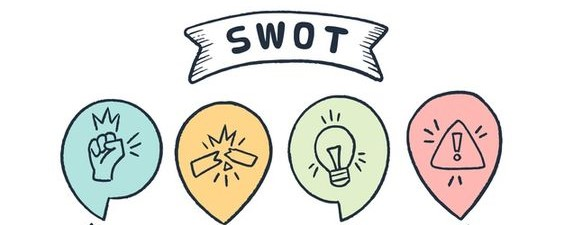

In the current political climate, it seems like the American way is “you are to blame for all of my troubles!” It’s not just politics; look at the legal system, how corporations operate, and how many divorces and dysfunctional family relationships there are. You look out at your world and see all of the people who are getting in your way, preventing your happiness, making bad decisions and generally ruining your life. If you were asked to create a list of difficult people, chances are you could come up with a couple of names without much hesitation.
The Blame Game is a popular one: “You make me so mad!” “You never think about my needs,” “You don’t care about the things I care about,” just to name a core few. People look to others to solve their problems, make them whole and give them meaning in life.
But what if the problem isn’t actually out there? What if part of the struggles you deal with are internal to you? It’s quite unpopular today to engage in healthy self-reflection, or to put it in another way, “What’s my role in my problems and how could I address things differently for different results?” Looking outside is so much easier. You can point to the other person, outline their foibles and failings very easily, and then rest comfortably knowing the culprit has been identified! You may be right – your problem might be your boss, your mother-in-law, your child or your best friend. Your problem might be how others treat you badly or ignore you or mistreat you. Your problem might legitimately be that you never get a break, and without bad luck you would have no luck. But what if by engaging in some healthy self-exploration you could identify obstacles that you can control? You may not be able to control your mother-in-law’s nasty attitude, but maybe your attitude fuels the fire. If you are a child, you are mostly at the mercy of others, but if you are over 18 and an adult, it’s time to identify your role and take some charge of your unwanted situations.

Here’s what healthy self-reflection is not: beating up on oneself, devolving into “woe is me” thinking, or using the opportunity to focus on all of the bad things that have happened to you and how you could have prevented them! It’s understanding where you are triggered, or what situations are troubling or negative for you, and then taking a step back to ask about your role or contribution to the process.
Apologizing for your behavior, seeing that you did something to hurt someone else, acknowledging that the way you are wired may sometimes serve you well but other times backfire for you – these are all exercises to help you learn to be more self-reflective. The problem with blame is that you can’t control what you don’t like. The one thing you have masterful control over is yourself; your own attitude, actions and reactions. If you are tired of the blame game and want to get real answers, consider engaging in a little self-reflection.
STEPS
Identify those things (or people) that are upsetting to you. Consider why they are upsetting. What do they do that is bothersome? Perhaps you are a strong advocate for children, or you were taken advantage of as a child, so people who prey on children – in any form or fashion – are particularly troubling for you. You blame them, you focus on them and you ruminate about how awful they are. Or it could be something as simple as asking your significant other (on many occasions) to just clean out the coffee grounds from the coffeemaker each morning, and yet every time you open the basket to make a fresh pot, there those grounds are to torment you.
Once you have identified each trigger (take them one at a time), consider impact.What has happened or might happen to you as a result of the difficult situation? Do you lose sleep? Have you gone without a fresh cup of coffee in weeks, so you are having caffeine withdrawal? Are you unable to be efficient or effective in your job? What is the outcome of the difficult situation?
How important is this issue to fix?Once you look at the problem and the impact, you may decide just to let it go. The coffee grounds irritate me, but I can live without home-brewed coffee.
If you decide there is significant impact (here comes the hard part), consider your role in creating, exacerbating or continuing the situation. Yes, that’s right – what contributing factors might there be in your approach? You will rebel – “I am not responsible for the parents out there who mistreat their children” – but each situation has an opportunity where we contribute or opt out. Consider what you are doing now, objectively, that creates the fuel for your fire over the other person’s behavior or the situation.
List what steps you have taken that keep you stuck.If you are concerned about children, do you read and re-read every article that outlines something awful that has happened? If the coffee grounds are still in the filter basket, do you refrain from asking your partner to please remember to take them out because you want the “gotcha” that comes from having them do something “wrong” again? Be honest here. Everyone has somewhere they contribute to a situation they don’t want, even if it is just staying in the situation and tolerating what’s happening.
Consider your own style.Are you someone who likes harmony, so you don’t want to bring up a conflict and rock the boat? Are you someone who has grand ideas but never gets around to implementing them? Are you someone who wants to get stuff done, so you rush to the finish line without having a clear plan? Again, this is not to beat yourself up, but more to take stock of your preferred approach and see how it connects to the trouble you may be having.
Own your stuff.Don’t ruminate over it. Don’t obsess. Don’t plead for forgiveness; just own, in an objective manner, the contribution you are making to staying stuck. Decide you want to move past blame and into a better place of action.
Identify just one thing you could do differently next time.Speak to your mother-in-law and “act as if” you care about her. Provide your boss with the action items he has been asking you for. Have a conversation with your sibling and tell her all of the things you appreciate about her, instead of picking out her flaws. Think of just one shift, just one change, you could make relating to the situations you outlined.
Keep trying new things.Work with yourself objectively and in good faith. Get tired of blaming and decide you want to be part of a solution, not just a finger-pointer saying “the problem is out there.” The more you take action, the more self-reflective and then active you can be, the more you will find you are not a victim in as many situations as you may have believed.